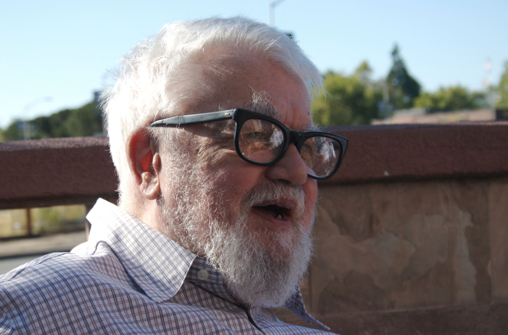

Introduction To Haskell
Lecture 1
An Unexpected Journey™
Using These Slides
Every slide has a secret note.
- On Chrome: press
F12, then click Console - On IE: press
F12, then click Console - On Firefox:
Ctrl+Shift+k
Shortcut Keys:
↓, PgDn, n, j |
next slide |
↑, PgUp, p, k |
prev slide |
Esc |
enables ctrl+f globally |
Instructor
ns4av@virginia.edu
Watchful Guardian
jwd@virginia.edu
Sponsored by...

Quite a Turnout

Online Followers
There are 997 people signed up as of 1/13/2013.
Over 121 countries, and over 50 universities:
|
|
|
Within 2 Days of Traffic


Syllabus
(Slides, homework, and announcements)
Meet once a week, Tuesday 5:30pm
Attendance: 40pts (5pts/day)
Homework: 30pts
Project: 30pts
Reference Text
by Bryan O’Sullivan, Don Stewart, and John Goerzen
by Miran Lipovača
More Than a Language
I know why you're here. ...why you hardly sleep, why night after night, you sit by your computer.
History
Alonzo Church invented λ-calculus

Then John McCarthy invented Lisp
The Origin
Haskell was made by a committee of really smart people to define an open standard*
More than 20 years old
- MIT
- Chalmers University
- Mitre Corp
- Victoria University of Wellington
- Simon Fraser University
- University of Cambridge
- Yale University
- University of Glasgow
- Microsoft Research Ltd
Features
- Purely functional
- Statically typed
- Lazy
1. Purely functional
- Every input has a corresponding output
-
f(x) = x² + 1
-
Powerful function compositions
g(x) = x - 1
g(f(x)) = x²
-
PURE
That means no side effects
A function will never modify a global variable
Order doesn't matter!
Easy concurrency
Let's be a little formal
f is function from a set A to a set B.
f :: A → B
What's the domain, codomain, and range?
domain(f) =
codomain(f) =
range(f) ⊆
domain(f) = A
codomain(f) = B
range(f) ⊆ B
Functional:
Haskell, Lisp, ML, Scheme, Erlang
Focuses on the high-level "what"
Imperative:
C++, Java, Python, Pascal
Focuses on the low-level "how"
What does this code do?
void f(int a[], int lo, int hi)
{
int h, l, p, t;
if (lo < hi) {
l = lo;
h = hi;
p = a[hi];
do {
while ((l < h) && (a[l] <= p))
l = l+1;
while ((h > l) && (a[h] >= p))
h = h-1;
if (l < h) {
t = a[l];
a[l] = a[h];
a[h] = t;
}
} while (l < h);
a[hi] = a[l];
a[l] = p;
f( a, lo, l-1 );
f( a, l+1, hi );
}
}
Sort in Haskell
qsort :: Ord a => [a] -> [a]
qsort [] = []
qsort (p:xs) = (qsort lesser) ++ [p] ++ (qsort greater)
where
lesser = filter (< p) xs
greater = filter (>= p) xs
No variable assignments,
No array indices,
No memory management!
No Side Effects
Haskell code:
count :: List -> Int
C++ code:
int count( List l ) { ... }
2. Statically Typed
- f x = x² + 1
- f :: Int → Int
- There is never confusion about types
(Bool, Int, Char, etc)
- Strong formalism. The proof is the code.
- If your code compiles, you're 99% done
Types
Every function in haskell has a Type signature.
foo :: Int -> String
I don't know what foo means,
but I know what it does!
3. Lazy

Lazy?
- Nothing is evaluated unless necessary
head (sort ls)
The list will only be sorted enough to find the minimum
[1..]
Who uses Haskell? *
|
|
Language shapes the way we think, and determines what we can think about.- Benjamin Lee Whorf
The limits of my language mean the limits of my world.- Ludwig Wittgenstein
A language that doesn’t affect the way you think about programming, is not worth knowing.- Alan Perlis
Homework
The Journey Begins
-
Run the interactive interpreter
$ ghci Prelude> - Fill out this week's form